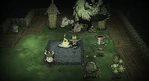
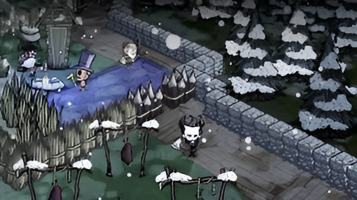

About Don't Starve Together
*Don't Starve Together* is an uncompromising multiplayer survival game developed by Klei Entertainment. Players are thrust into the mysterious and dangerous world of *The Constant*, a place filled with whimsical dangers, eerie creatures, and a dark aesthetic that challenges both their ingenuity and survival instincts.
Gameplay Highlights
The game focuses on exploration, crafting, and survival as players battle hunger, insanity, and hostile creatures. Cooperative gameplay encourages players to divide tasks like resource gathering, base building, and combat, creating a dynamic survival experience.
Unique Features
- Seasons and Weather: Changing seasons bring unique challenges like harsh winters and scorching summers.
- Crafting: Create tools, weapons, clothing, and more to ensure survival.
- Base Building: Construct a secure base to fend off nightly dangers and house your resources.
- Multiplayer: Up to 6 players can join forces to face *The Constant's* trials or betray each other for survival.
Art Style
The game is renowned for its unique visual style, inspired by Tim Burton’s gothic and whimsical aesthetic. Its hand-drawn characters and haunting atmosphere create a distinct sense of dread and wonder.
Interesting Facts About Don't Starve Together
- The game began as a single-player experience (*Don't Starve*) before adding multiplayer support.
- Charlie, the ruler of *The Constant*, was once a human trapped by its dark powers.
- Players who venture into the darkness without light will meet an untimely demise, reinforcing the importance of preparation.
- The game's soundtrack adjusts dynamically based on the current environment and player actions.
The Community
The Don't Starve Together community is highly active, as they would often talk about new updates before they even come out. The Don't starve together Devs activly engage with the community as they put out roadmaps that they will do at the start of the year to let the community know and get hype for what they will add in the future.